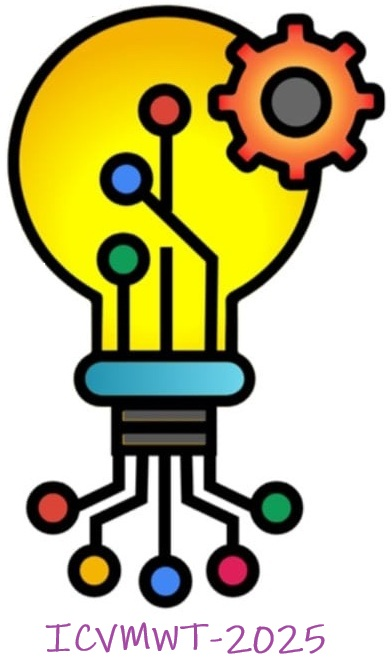

International Conference on VLSI, Microwave and Wireless Technologies (ICVMWT-2025) will be organized by Madan Mohan Malaviya University of Technology (MMMUT), Gorakhpur in collaboration with Electronics and communication department, at MMMUT Gorakhpur (UP), India.
It is planned to publish the peer reviewed and selected papers of conference as proceedings with Springer in their prestigious “Lecture Notes in Electrical Engineering” series [ For more Click Here ]. For detailed instructions for author and editors of conference proceedings, kindly visit the following link: [ Click Here ]. Select papers from the conference will be published by Springer as a proceedings book volume. Springer will conduct quality checks on the accepted papers and only papers that pass these checks will be published. Springer Nature does not charge any money for publication of Non-Open Access content. Abstracts/extended abstracts and short papers (less than 4 pages) are not considered for publication.